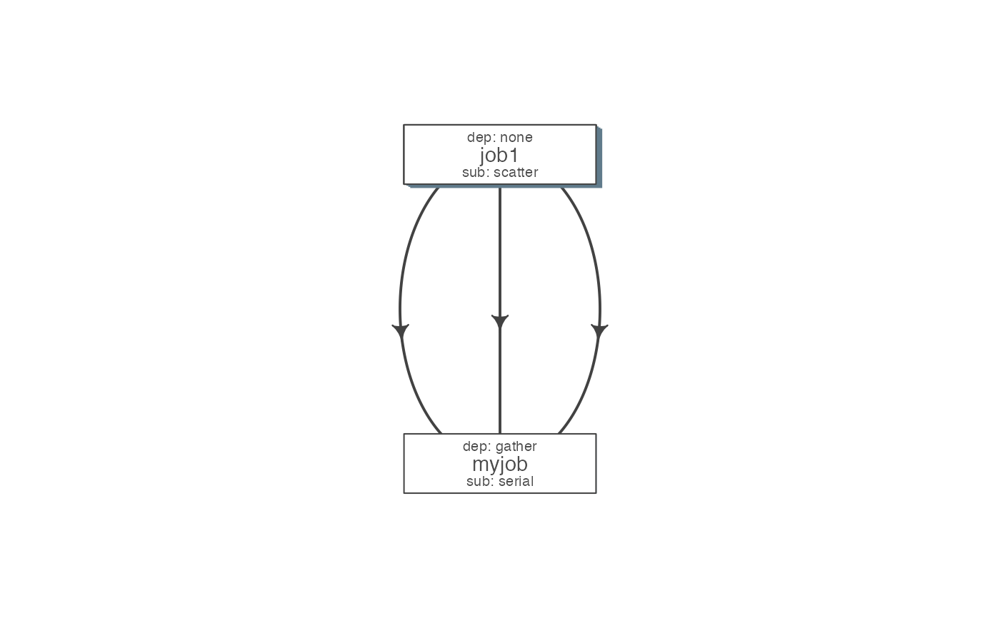

Internal function (used by to_flow), which aids in creating a job object.
job( cmds = "", name = "myjob", q_obj = new("queue"), previous_job = "", cpu = 1, memory, walltime, submission_type = c("scatter", "serial"), dependency_type = c("none", "gather", "serial", "burst"), ... )
| cmds | the commands to run |
|---|---|
| name | name of the job |
| q_obj | queue object |
| previous_job | character vector of previous job. If this is the first job, one can leave this empty, NA, NULL, '.', or ''. In future this could specify multiple previous jobs. |
| cpu | no of cpu's reserved |
| memory | The amount of memory reserved. Units depend on the platform used to process jobs |
| walltime | The amount of time reserved for this job. Format is unique to a platform. Typically it looks like 12:00 (12 hours reserved, say in LSF), in Torque etc. we often see measuring in seconds: 12:00:00 |
| submission_type | submission type: A character with values: scatter, serial. Scatter means all the 'cmds' would be run in parallel as separate jobs. Serial, they would combined into a single job and run one-by-one. |
| dependency_type | dependency type. One of none, gather, serial, burst. If previous_job is specified, then this would not be 'none'. [Required] |
| ... | other passed onto object creation. Example: memory, walltime, cpu |
qobj <- queue(platform="torque") ## torque job with 1 CPU running command 'sleep 2' jobj <- job(q_obj=qobj, cmd = "sleep 2", cpu=1) ## multiple commands cmds = rep("sleep 5", 10) ## run the 10 commands in parallel jobj1 <- job(q_obj=qobj, cmd = cmds, submission_type = "scatter", name = "job1") ## run the 10 commands sequentially, but WAIT for the previous job to complete jobj2 <- job(q_obj=qobj, cmd = cmds, submission_type = "serial", dependency_type = "gather", previous_job = "job1") fobj <- flow(jobs = list(jobj1, jobj2)) ## plot the flow plot_flow(fobj)#>#>#>#>#>#>#>if (FALSE) { ## dry run, only create the structure without submitting jobs submit_flow(fobj) ## execute the jobs: ONLY works on computing cluster, would fail otherwise submit_flow(fobj, execute = TRUE) }